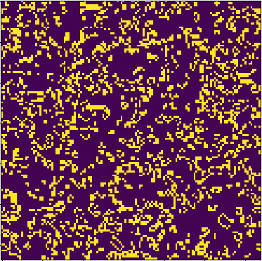

Hi!
Ich bin Jonas Jünemann, ein aspirierender Software Entwickler aus dem schönen Münster. Dort studiere ich zur Zeit Wirtschaftsinformatik an der Universität, wobei ich gerade meinen Bachelor beende. Neben dem Studium bin ich privat gerne und viel am programmieren, wobei ich primär im Bereich Data Science und Webentwicklung arbeite. Am liebsten, aber nicht ausschließlich, arbeite ich dabei mit Python oder Javascript, gelegentlich auch mit Java, C++ und php.
Im WI-Studium standen für mich vor allem die Arbeit mit Daten, Objektorientiertes Programmieren mit Java sowie informatische Algorithmik im Fokus. Vor allem über die letzten zwei Jahre habe ich dann vermehrt private Projekte in der Webentwicklung durchgeführt. So habe ich mir unter anderem Html/CSS, Javascript beigebracht und Frontend-Entwicklung gelernt. Dies wurde ergänzt durch Backend Projekte vor allem in Python über Flask und Django. Hierbei konnte ich dann sehr gut Kenntnisse aus dem WI-Studium bezüglich der Arbeit mit Datenbanken mit (primär) SQL einbringen. Neben der Webentwicklung gab es auch große Projekte aus dem Bereich Data Science, u.a. mit Machine-Learning Algorithmen. Einen Überblick über meine (größeren) Projekte, können Sie gerne hier finden.
Ansonsten bin ich privat ein enthusiastischer und gelegentlich erfolgreicher Investor mit Aktien, ETFs und Kryptowährungen. Dies schlägt sich tendenziell auch in meinen Projekten nieder. So sind einige meiner Projekte darauf orientiert, auf Grundlage von Daten Schätzungen auf die Preise dieser zu erlauben. Außerdem bin ich leidenschaftlicher Gamer, meist in Multiplayer-Spielen zusammen mit Freunden. Auch hier sind einige Projekte mit diesem Fokus vorgenommen worden. Darüber hinaus betreibe ich gerne Sport, auch wenn dies durch die Corona Situation im letzten Jahr sicherlich etwas komplizierter gemacht wurde.
Mein Skillset
Projekte
Eine Kurzübersicht über einige meiner größeren Projekte
Beschleunigung von Python-Implementationen
Ein Projekt, über das ich auch meine Bachelorarbeit geschrieben habe, beschäftigt sich mit den Beschaffenheiten Python, besonders, wie eine Python Implementation ausgeführt wird und wie dies unter Umständen zu beschleunigen wäre. Hierfür wurde eine implementation des bekannten Conways Game of Life vorgenommen, zunächst in Python. Anschließend wurde diese erweitert durch Implementationen mit C++, mit Python in Verbindung mit Cython und mit C++ Extensions. Im letzten Schritt wurde GPU Programmierung mit CUDA implementiert und als Vergleichsmaßstab genommen.
Mehr Info Zum QuellcodeMachine-Learning Projekt
Da mich bei der Arbeit mit Daten besonders Machine Learning Algorithmen faszinieren, habe ich mir in diesem Projekt zumindest einen groben Überblick über verschiedene Algorithmen verschafft. Dafür habe ich diese teilweise selbst implementiert, wenn auch nicht unbedingt in vergleichbarem Detail bzw. Performance wie bspw. die sklearn- Bibliothek diese für Python bietet. Anschließend habe ich mir dann interessante Datensets gesucht, meist über kaggle.com, um zu sehen, inwieweit sich ML-ALgorithmen nutzen lassen um aus diesen Daten aufschlussreiche Erkenntnisse ziehen zu können. Für die Anwendung habe ich dann sowohl meine eigen programmierten Implementationen als auch sklearn genutzt.
Mehr Info Zum QuellcodeSpotify-Applikation mit React
Eine React-App, die in Verbindung mit der Nutzung der Spotify API funktioniert. Es können aus der Spotify Bibliothek Titel gesucht und in eine Playlist gespeichert werden. Diese Playlist kann wiederum automatisch in Spotify übertragen werden. Vorraussetzung für die Nutzung der App ist ein funktionierender Spotify Account. Die Anmeldung erfolgt dann über ein OAuth2 Verfahren.
Mehr Info Live-Demo Zum QuellcodeWenn Sie interessiert sind, wären hier weitere Projekte von mir finden.
Kontakt
Der verlässlichste Weg mich zu erreichen, ist mir per Mail zu schreiben.
Hierfür kann gerne unten stehendes Kontaktformular genutzt werden.
Ansonsten steht darunter auch meine Mail Addresse, die gern genutzt werden kann.
In jedem Fall freue ich mich auf ihre Nachricht.
Jonas
Beschleunigung von Python-Implementationen
Ein Projekt, über das ich auch meine Bachelorarbeit geschrieben habe, beschäftigt sich mit den Beschaffenheiten Pythons, im speziellen damit, wie eine Python Implementation ausgeführt wird und wie dieser Prozess unter Umständen zu beschleunigen wäre. Primäres Testobjekt war dabei eine Implementation des relativ bekannten Game of Life von J.H. Conway.
Der Fokus des Projekts lag dabei nicht auf der algorithmischen Laufzeit im Sinne der O() Notation, sondern auf der Ausführung mittels bspw. anderer Möglichkeiten als der standardmäßig verwendeten CPython Implementation. Hierbei war zum einen die Auslagerung von Teilen des Codes nach C mittels Cython eine relevante Option. Zum Anderen die Auslagerung nach C++ und dem entsprechenden g++ Compiler mit bspw. pybinds11.
Als zweiten Schritt des Projektes wurde dann numba als Möglichkeit der "Auslagerung" in eine andere Ausführungsart innerhalb von Python betrachtet. Hierbei wird spezifisch der Python Interpreter umgangen, indem Just-In-Time mit der LLVM Architektur kompiliert wird, was tendenziell wesentliche Geschwindigkeits-Vorteile birgt. Betrachtet wurde hier neben der Geschwindigkeit auch Kompatibilität innerhalb von Python als wichtiger Faktor.
Als letztes wurde dann eine Auslagerung der Code Ausführung von der CPU auf die GPU betrachtet. Dies stellt für Python eine wirklich hervorragende Möglichkeit dar, da dies bei einer parallelen Ausführung auf den tausenden Kernen einer GPU den Prozess enorm beschleunigt. So wurde spezifisch für Python herausgestellt, wie (verhältnismäßig) leicht sich aus Python heraus auf der GPU arbeiten lässt. Gleichzeitig wurde zumindest angemerkt, dass die Installation und das Setup, gerade auf einer Windows-Maschine, einen durchaus beträchtlichen Aufwand darstellen kann. Im Rahmen des Projektes wurde die GPU_Programmierung dabei Nvidia's CUDA Framework verwendet. Spezifisch wurde im Rahmen des Projektes herausgestellt, wie viel schneller eine GPU Ausführung ist, auch im Vergleich mit einer C++ Ausführung.
Machine Learning Project
Da mich bei der Arbeit mit Daten besonders Machine Learning Algorithmen faszinieren, habe ich mir in diesem Projekt zumindest einen groben Überblick über verschiedene Algorithmen verschafft. Dafür habe ich diese teilweise selbst implementiert, wenn auch nicht unbedingt in vergleichbarem Detail bzw. Performance wie bspw. die sklearn- Bibliothek diese für Python bietet. Diese habe ich daher auch an verschiedenen Stellen genutzt. Primärer Hintergrund war hier auch nicht die Neuentwicklung der Algorithmen, sondern diese möglichst einmal von Grund auf nachzubauen um diese vollständig zu verstehen.
Implementiert und betrachtet habe ich mir dabei zunächst die sog. überwachten, stetigen ML-Algorithmen. Diese waren mir noch aacus der Uni bekannt, und umfassen primär die Lineare Regession sowie die Multiple Lineare Regression. Anschließend wurden dann zunächst die "simpleren" Klassifizierungs-Algorithmen wie die logistische Regression und der K-Nearest Neighbor Algorithmus betrachtet. Später warem dann auch die etwas forgschritteneren Algorithmen wie die Support Vektor Machines, Entscheidungsbäume und der Naive Bayes Klassifzierer, der vor allem für die Einschätzung von Textnachrichten im Sinne des Natural Language Processing eine wichtige Rolle besitzt, im Fokus.
Im letzten Schritt habe ich dann nicht überwachte ML-Algorithmen betrachtet, primär das Clustering mittels dem K-Means Algorithmus, hierfür habe ich dann bspw. einen (simplen) Handschriftserkenner mit sklearn gebaut.
Probieren Sie diesen doch gerne einmal aus! Die Idee ist relativ simpel, Sie können in die unten stehenden Kästchen jeweils eine Zahl schreiben. Dann können Sie den Button "Überprüfen" klicken.
An dieser Stelle werden dann ihre handschriftlichen Zahlen per JavaScript in eine 2D Matrix umgewandelt, die ein Programm verstehen kann. Anschließend wird dieses Array an eine von mir erstellte flask-API geschickt. In dieser wird dann mit K-Means-Algorithmus aus ihrer Handschrift mit sklearn und anhand eines Traningsdatensets (hoffentlich) korrekt ihre vierstellige Zahl ermittelt, und zurückgesendet. Meistens sind allerdings lediglich 2-3 der Zahlen korrekt erkannt, insbesonders mit der 3, 8 und 9 hat der Algorithmus zugegebenerweise etwas zu kämpfen, diese korrekt zu identifizieren.
Geendet hat dieses Projekt für mich mit einem kurzen Einblick in die Neuronalen Netzen, also den Anfängen des Deep-Learning. Dies ist offensichtlich ebenfalls ein hoch interessantes, aber nicht direkt triviales Thema, daher hat mir an dieser auch ein kurzer Einstieg gereicht, da ich mich in diesem Projekt eigentlich mit ML-Algorithmen und der sklearn Bibliothek beschäftigen wollte. Deep Learning und u.U. Natural Language Processing sind aber Themen, die ich in einem nächsten Projekt angehe.
Für meine eigenen Projekte für den jeweiligen Algorithmus habe ich mir üblicherweise interessante Datenset gesucht, eine große Hilfe war dabei kaggle.com, dass eine ganze Reihe an hoch interessanten Datensets für die Arbeit mit ML-Algorithmen bereitstellt, sowie auch eine Menge möglicherweise hilfreicher Ressourcen in diesem Bereich.
Spotify-Applikation mit React
In dem Bestreben, React weiter zu erkunden und zu lernen, habe ich ein Projekt entwickelt, dass React für eine Webapplikation benutzt, aus der aus auf die Spotify API zugegriffen werden kann. Die grundlegende Funktionalität der App ist dabei recht simpel, so ermöglicht diese das Zusammenstellen einer Playlist. Hierfür kann zunächst ein gewünschter Titel gesucht werden. Anschließend werden für diesen Titel entsprechende Spotify Ergebnisse vorgestellt. Titel aus den Ergebnis können dann wiederum zu einer Playlist hinzugefügt werden. Diese kann umbenannt werden und ist anschließend für den Spotify-Account verfügbar.
Vorraussetzung für die Nutzung der App ist also ein funktionierender Spotify Account. Die Anmeldung erfolgt dann über ein OAuth2 Verfahren, bei dem man sich bei Spotify selbst anmelden muss. (Geschieht automatisch beim ersten Suchdurchlauf nach einem Titel). Das OAuth2 Verfahren erlaubt dadurch dabei eine vollständig Front-End basierte Nutzung der API ohne die Gefahr, API Keys zu gefährden.
Die App ist ansonsten auch noch Work-in-Progress. Weitere Funktionalitäten, sowie eine etwas verbesserte User-Experience beim Anmeldeprozess sind aktuell in Arbeit.